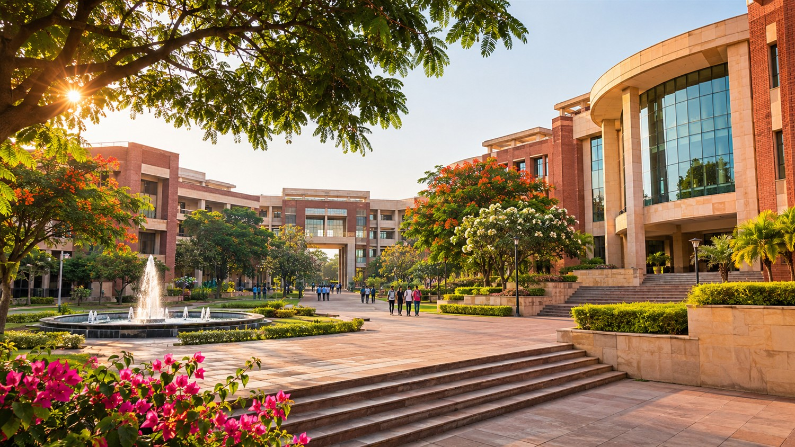
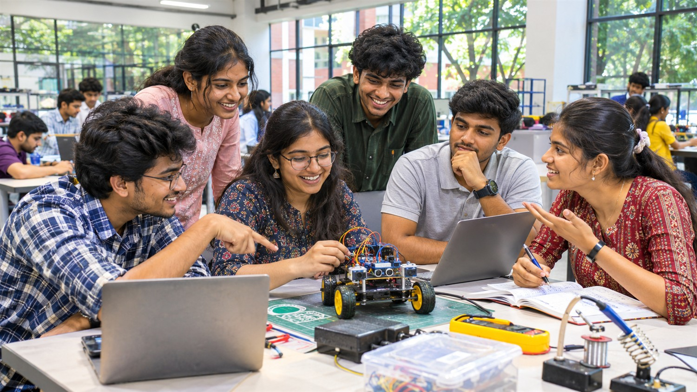
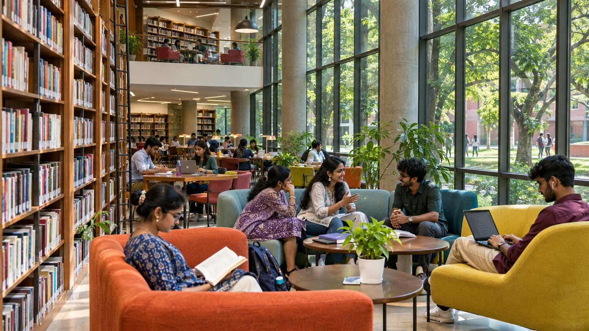
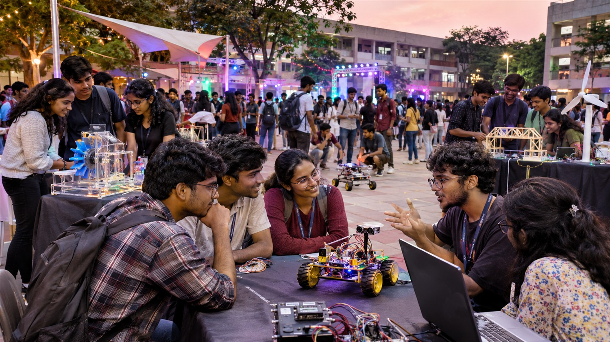
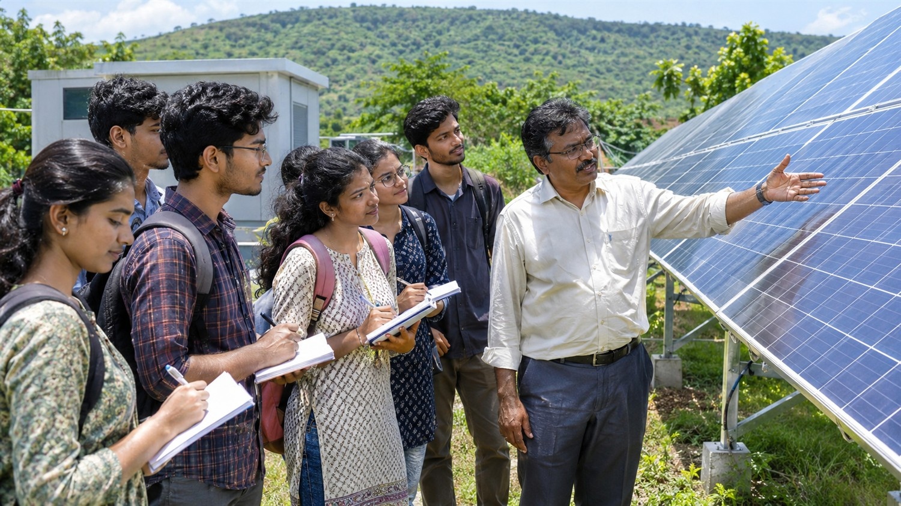
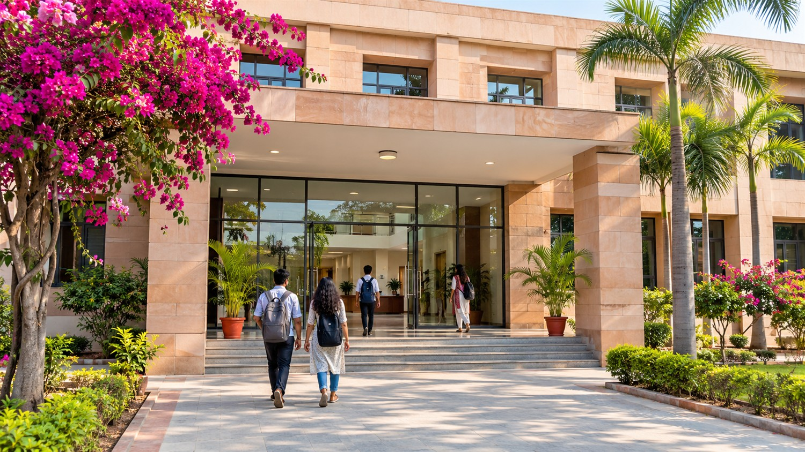
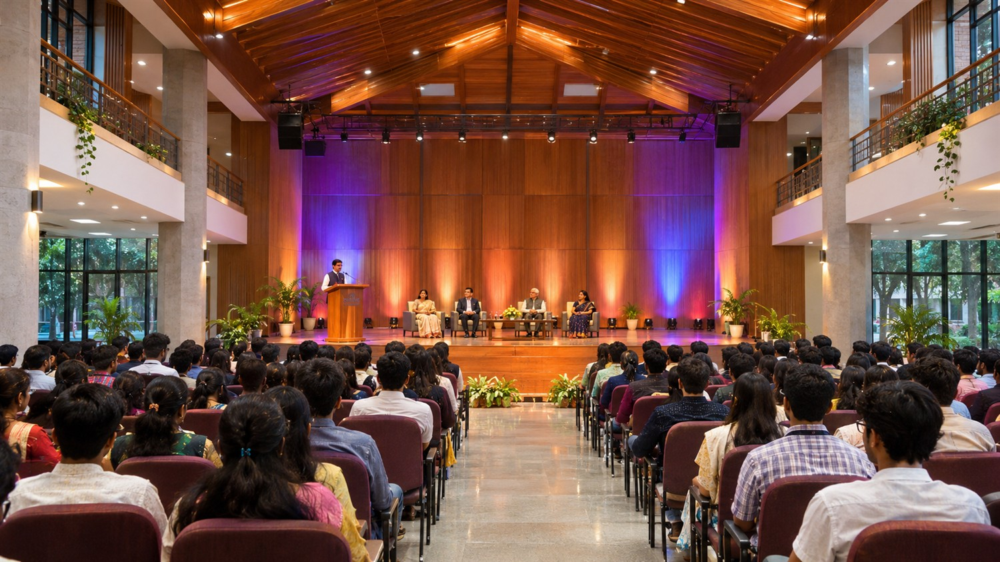

Explore engineering at Vishvaya
Find programme information, application guidance, and important admission dates.
Learn by asking questions, building ideas, and working together on problems that matter.

Public updates for prospective students and families.
Find programme information, application guidance, and important admission dates.
Verified eligibility rules, application steps, and deadlines will appear here.
Scholarship office detailsMeet our departments, discover student projects, and explore the campus.
Explore campus lifeExplore current research and ideas shaping the future of engineering and society.
See student activitiesVishvaya is imagined as a place where strong fundamentals meet practical projects, thoughtful collaboration, and room for every student to find a direction.
Discover our learning approachVishvaya’s vision is to become a trusted centre for thoughtful engineering education and discovery. We aim to prepare graduates who combine technical depth with empathy, integrity, and responsibility. We want ideas born in classrooms and laboratories to improve communities and contribute to a more sustainable future.
Our mission is to deliver a strong foundation in engineering through engaged teaching, hands-on projects, and close academic mentorship. We encourage students to explore research, entrepreneurship, and interdisciplinary work. We build an inclusive campus where curiosity is welcomed and every learner can grow. We connect education with industry and society while upholding ethics, collaboration, and lifelong learning.
Our academic framework brings together outcome-based education, institutional quality processes, and a strong university connection.
Projects that connect engineering concepts with practical challenges.
Space to ask for guidance, feedback, and a clearer next step.
Learn through prototypes, design reviews, and collaborative work.
Build the habit of investigating evidence and testing ideas.
Prepare for workplace learning through structured experience.
Understand engineering through people, places, and different viewpoints.
Imagine a connected campus that respects its surroundings.
Clubs, festivals, sports, and friendships that make a college community.
Explore undergraduate engineering pathways. Select a department to discover its learning areas, laboratories, and specialisation options.
Explore focused study options that complement your core engineering degree and help you build a distinct academic direction.
Choose a department to exploreHonours offer deeper study in a focused area, while a minor adds complementary knowledge beyond the core programme. Students can explore emerging fields alongside strong engineering fundamentals.
Specialisation availability, eligibility, and credit requirements follow the university-approved curriculum and academic regulations.Generated scenes for the fictional campus: learning spaces, shared events, and time beyond lectures.






These generated images are visual concepts and do not represent actual facilities.
We will publish verified recruiter participation, internship partners, and career support details once the college data is defined. No placement promises or salary figures are used in this preview.
Experiences from students across our engineering community.
In our design studio, a rough sketch can become a working prototype in a few weeks. Faculty feedback helps us understand what works, what needs testing, and how to improve it. That hands-on cycle has made engineering feel connected to everyday life. I have also learned to trust my team and keep asking better questions.
Deepak AgasheBTech · Computer Science and EngineeringMy favourite part of college is how a project brings different perspectives together. We learn to explain our ideas clearly, listen to one another, and solve problems step by step. The clubs and technical events give us a welcoming place to try something new. I have grown more confident sharing my work and learning from feedback.
Ananya DeshmukhBTech · Electronics and Communication EngineeringWorking on a campus energy project helped me connect classroom concepts with real constraints. We studied the problem, compared possible approaches, and presented a practical design as a team. The experience made me curious about sustainable engineering and gave me a clearer direction for future study. It also showed me how much patient collaboration matters.
Rohan KulkarniBTech · Electrical EngineeringAt Vishvaya, we want every student to find the confidence to explore, the patience to build, and the courage to make a thoughtful difference.
Office of the DirectorStudents, faculty, and administrators can sign in through the portal links above.